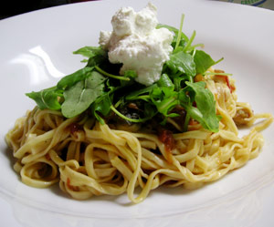

Tomatensauce mit Auberginen, Ruccola und Riccota
4,5 von 6Eine Zwiebel, ein Knoblauchzehe sowie 2 kleine Auberginen in Würfel geschnitten andämpfen. Frische Tomaten oder Pelatti beigeben. Alles eine halbe Stunde kochen. Mit Salz und Pfeffer abschmecken und mit der Pasta vermengen, im Teller anrichten. Etwas Ruccola darüber verteilen und mit einem Esslöffel Ricotta vollenden.
